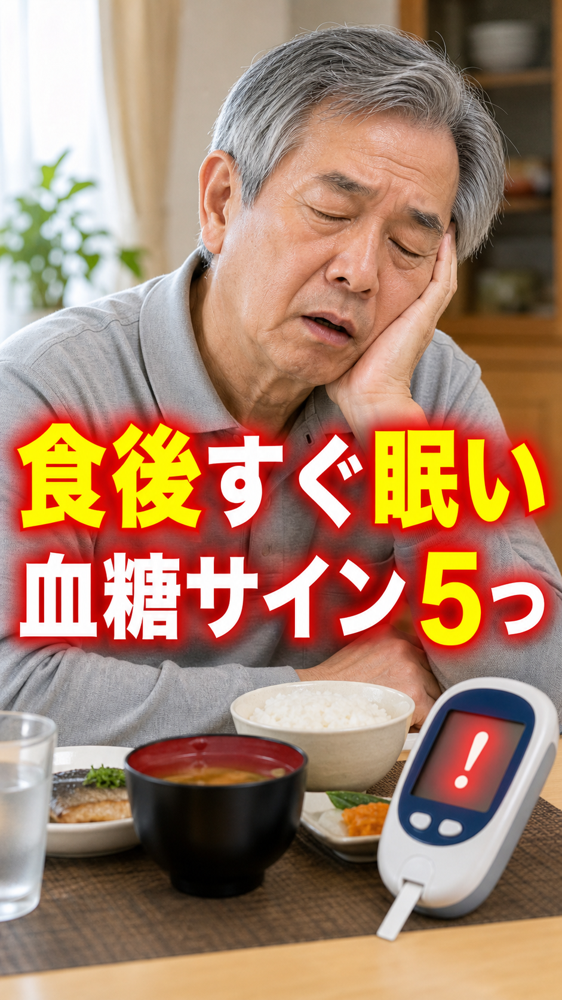
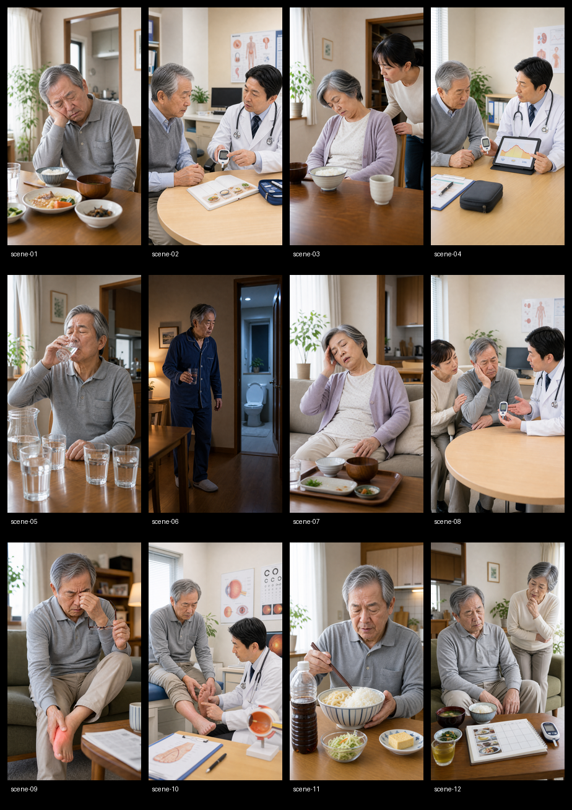

食後すぐ眠い人、血糖の危険サイン5つ
Thumbnail

Contact Sheet

내용 해석
# 내용 해석 ## 제목 식후 바로 졸린 사람, 혈당 위험 신호 5가지 ## 영상 내용 식후에 바로 졸리는 일을 단순히 나이나 피로 탓으로만 넘기면 위험할 수 있습니다. 고령자가 놓치기 쉬운 혈당 관련 신호 5가지입니다. 1. 점심 식사 후 매번 잠들어 버린다. 식후고혈당은 식사 후에도 한동안 혈당이 높은 상태를 말합니다. 2. 목이 말라서 물을 여러 번 마신다. 고혈당이 계속되면 갈증, 물을 많이 마심, 소변이 잦아지는 증상이 나타날 수 있습니다. 3. 식후에 멍해지고 눕고 싶어진다. 당뇨병은 증상 없이 진행되는 경우도 있어, 피로감만으로는 놓치기 쉽습니다. 4. 눈이 흐릿하거나 발이 찌릿찌릿하다. 혈당이 높은 상태가 오래 지속되면 눈이나 신경 합병증으로 이어질 수 있습니다. 5. 단 음료와 많은 양의 주식이 계속된다. 식사의 편중과 식후에 계속 앉아 있는 습관은 혈당 변동을 더 크게 만들 수 있습니다.
Status
{
"script": "complete",
"sources": "complete",
"scenes": "complete_segment_timed",
"captions": "complete_center_ass_and_srt_segment_synced",
"tts": "complete_elevenlabs_segmented_synced_hiragana_number_pauses",
"images": "complete_fresh_imagegen_project_bound_visual_match_verified",
"render": "complete_final_mp4",
"visual_match": "verified_scene_images_match_narration_contact_sheet",
"final_qc": "pass"
}
Every scene image was newly generated and checked against the exact narration beat. Final sync uses scene-by-scene ElevenLabs MP3 durations measured with ffprobe.
Links
{kind=link}
Description
食後すぐ眠くなるのを、年齢や疲れだけのせいにしていませんか。 高齢者が見逃しやすい血糖の危険サインを5つに絞って解説します。 この動画は一般的な健康情報です。強い口渇、多尿、急な体調不良、視力の変化、足のしびれ、糖尿病の薬を使用中の低血糖症状がある場合は、医師や薬剤師など専門家に相談してください。 #健康雑学 #シニア健康 #血糖値 #糖尿病予防 #食後高血糖 #高齢者ケア #生活習慣病 #食後眠気